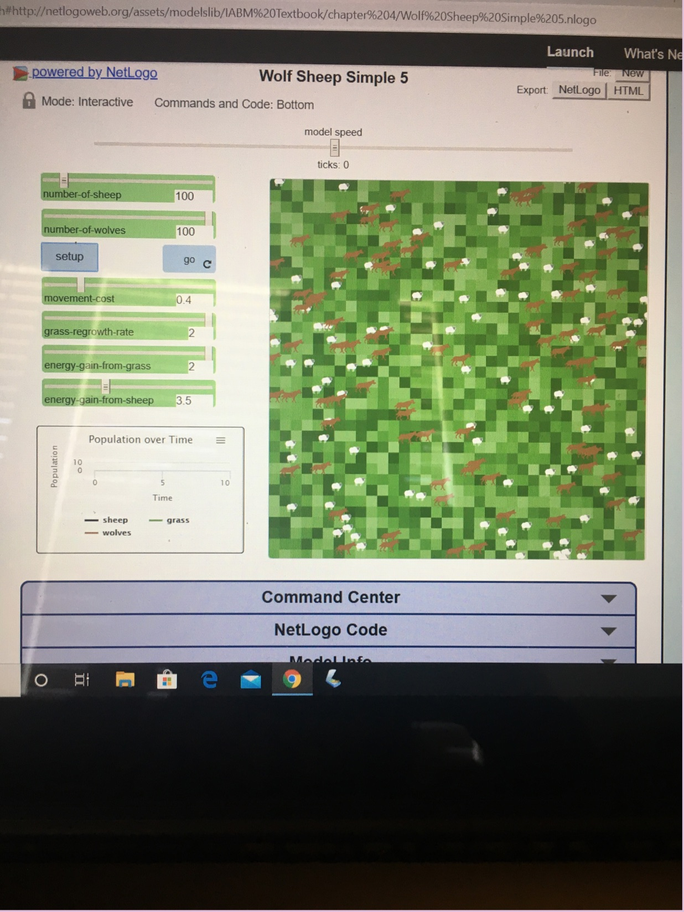
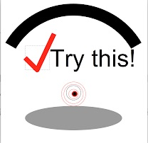
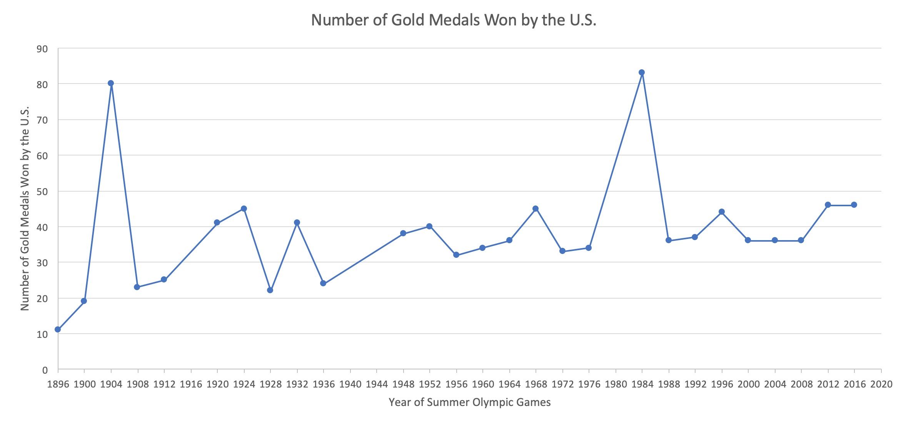

Home
Portfolio
About Me
This is my Portfolio Page!
This is the first project we did. We created a game on Scratch about a dog trying to eat donuts in space while escaping from the dinosaur! The game gets more difficult as time goes on since the dinosaur moves a little faster every ten seconds. Try to beat your high score!

The App that we created is meant to neutralize your mood. If you indicate that you are feeling good at the moment, the app will insult you to try and balance your good mood. Similarly, if you indicate that you are not feeling well, the app will complement you to try and make you feel better :)
This is the interactive story that we made. We used Python 2.7 and the website repl.it to make this interactive story. The story is about someone who is escaping from jail. You need to help them escape from prison before they are killed with the electric chair. There are 9 choices that yo need to make and if they are all correct, the prisoner will be able to escape. Don't let him get caught!

The initial ratio of wolves to sheep allowed for a stable population. If the number of wolves are increased to outnumber the sheep, the sheeps will die out and the wolves will too soon after since they have nothing to eat. If we decrease the growth rate and energy gained by the grass, the sheep will die, and again, the wolves will too.

This is the GUI project that I did where I modified a picture by changing the color of one of the circles and moving it up a little bit. I used Python Tkinter to modify this picture.

This is the data analysis project. I looked at the number of gold medals that the U.S. has won at past summer olympics to see if we can predict how many they will win in the next olympics (which was supposed to be this year). Some years we won a lot more medals than usual and that was usually due to political reasons and other countries not coming (like WWII).